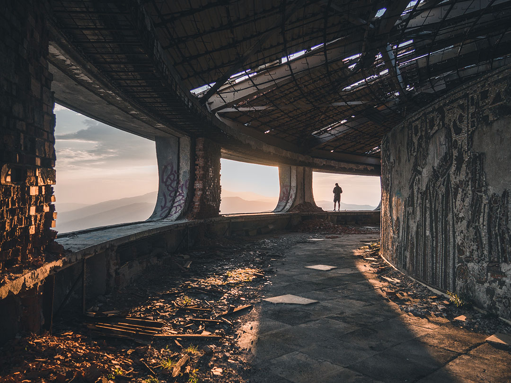

Urban Explorer
Urban Exploration
Urban exploration is the exploration of man-made structures, usually abandoned ruins or not usually seen components of the man-made environment.
Urban exploration is the exploration of man-made structures, usually abandoned ruins or not usually seen components of the man-made environment.